Live GPS tracking of your salespeople that keeps recording where there is no mobile signal and uploads everything to Odoo automatically when the network returns – with a live map, route replay, day logs and verified customer visits.
Industrial areas, basements, highways, villages and tier-3 towns all have patchy coverage. Most tracking apps simply send the location to the server – when there is no signal, that location is gone. Managers see jumps on the map, distance reports are wrong and customer visits cannot be proven.
Every salesperson with today's trail and a clear status: Live, Delayed, No signal, Day ended. Auto-refresh every 30 s, battery level, points synced after no-signal, mock-GPS warning.
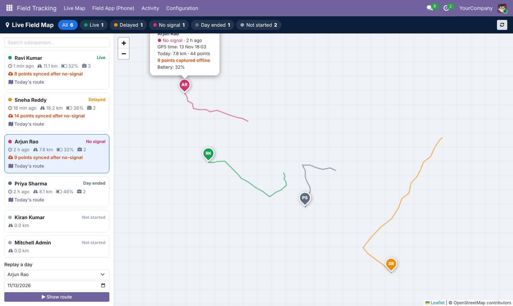
Blue = uploaded live, orange dashed = recorded with no signal and synced later. Automatic stop detection, visits inside / outside geo-fence, play-back slider with GPS time, accuracy and upload delay.
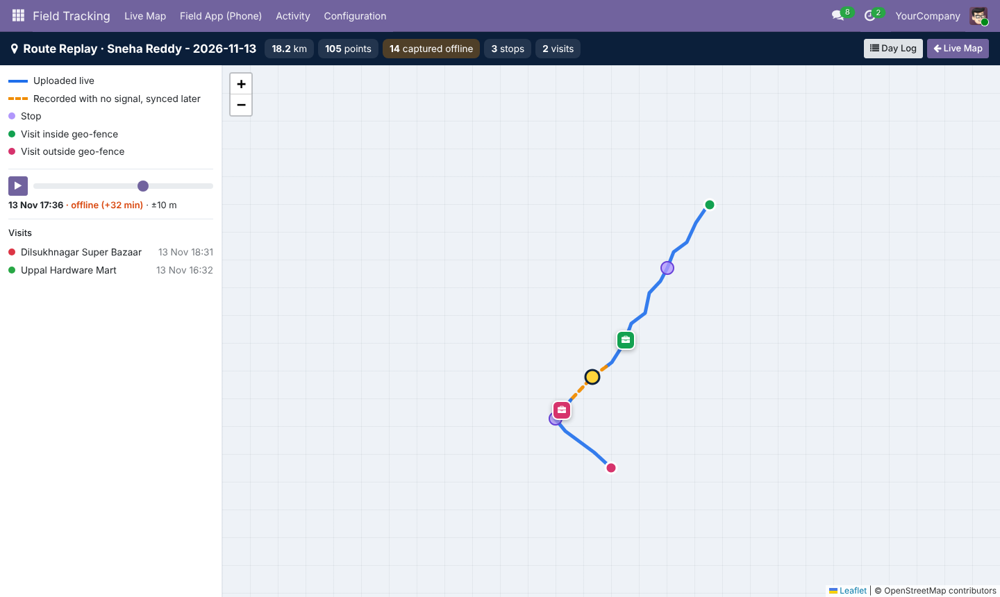
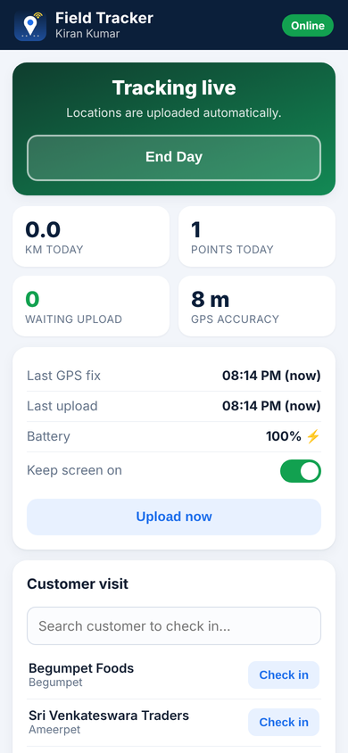
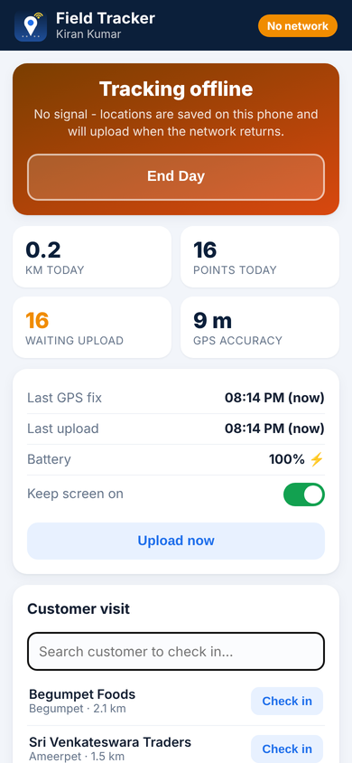
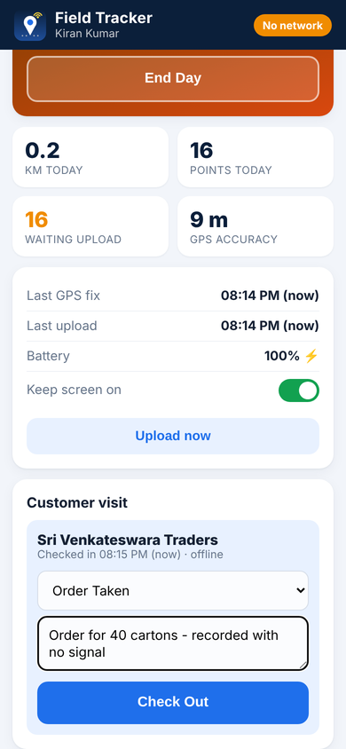
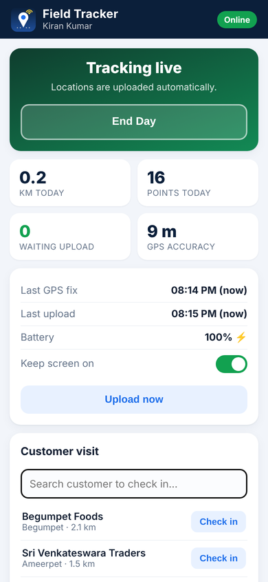
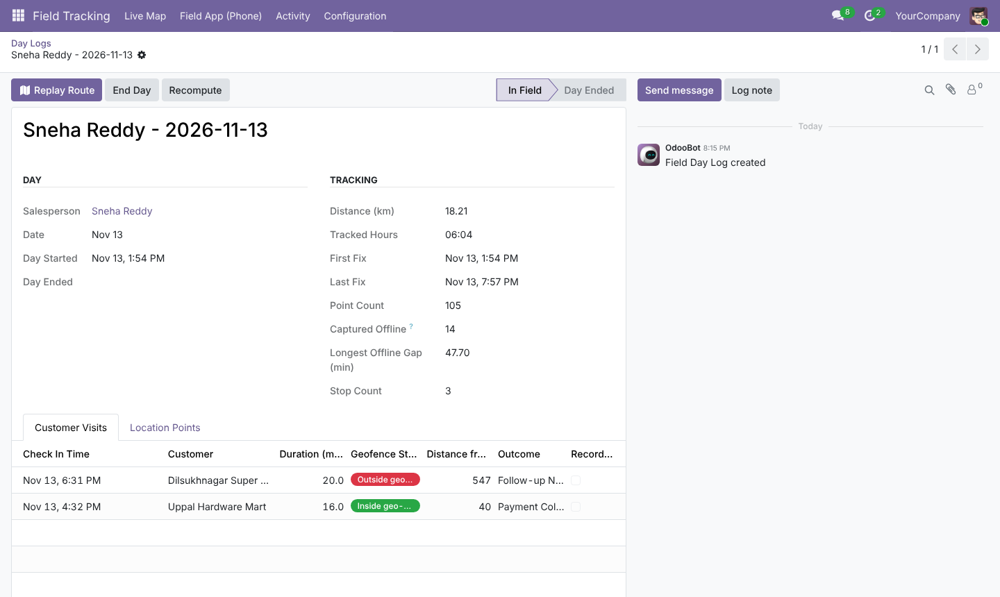
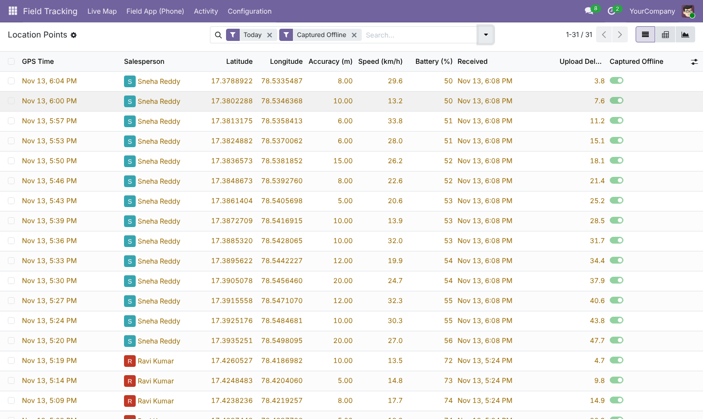
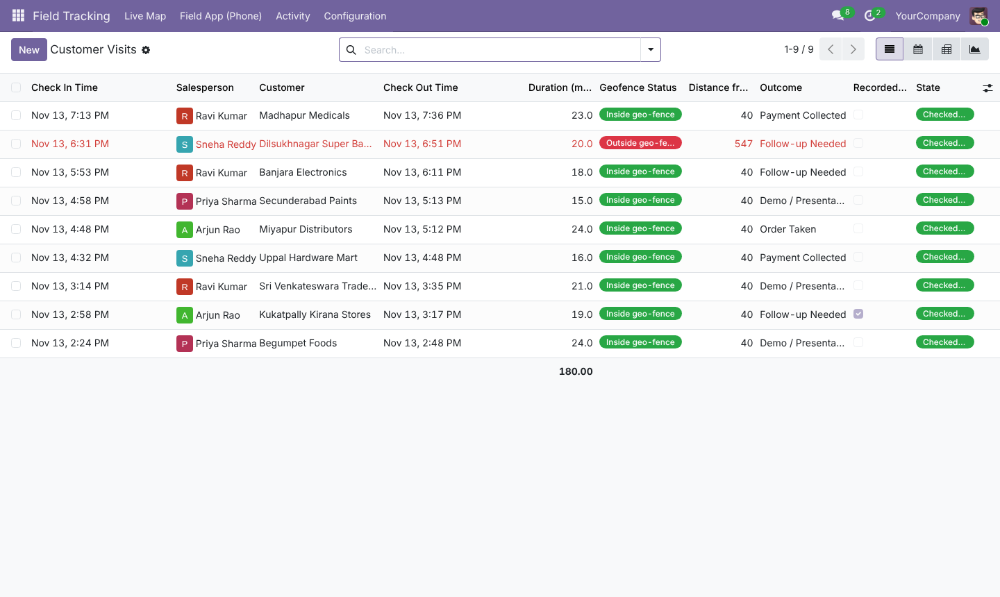
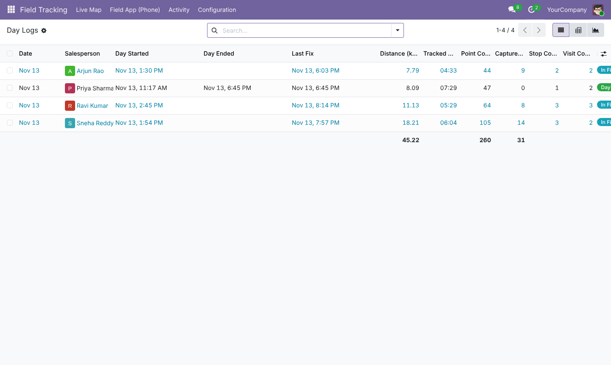
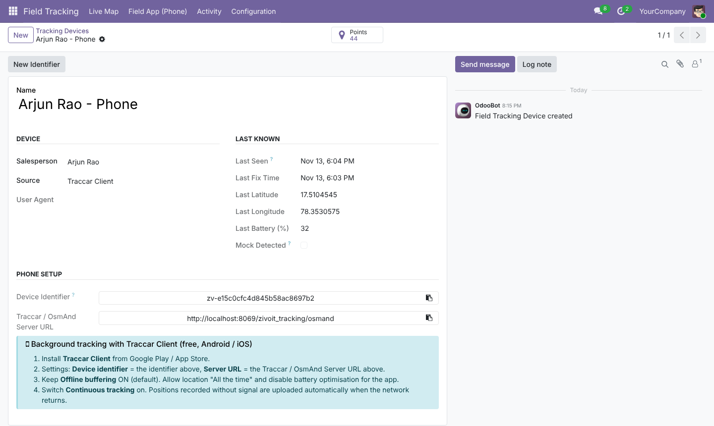
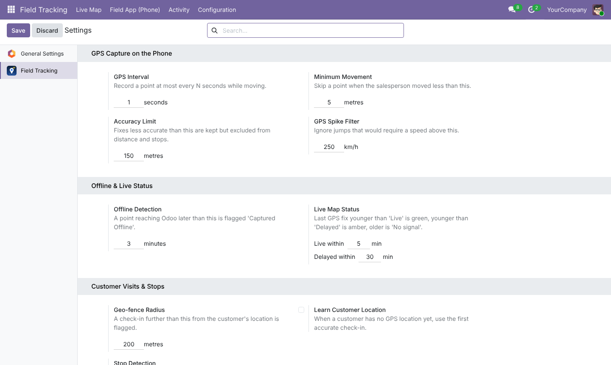
Does GPS work without mobile data?
Yes. GPS is satellite-based; mobile data is only needed to upload. The app records and queues positions without any network.
How long can a phone stay offline?
Days. The queue is limited only by the phone's storage; one day of tracking is typically a few hundred kilobytes.
What if the upload is interrupted half-way?
Only points acknowledged by Odoo are removed from the phone. Points sent twice are recognised and stored once.
Do salespeople need an Odoo licence?
Yes, each tracked salesperson is an Odoo internal user with the "Field Tracking: Salesperson" access right.
Can we use Google Maps tiles?
Any XYZ tile server can be set in Settings (OpenStreetMap, MapTiler, your own server, or a provider you are licensed for).
Installation help, a branded Android build, or a custom field-sales workflow (beat plans, orders on the road, expense claims)? Our Odoo team is ready.